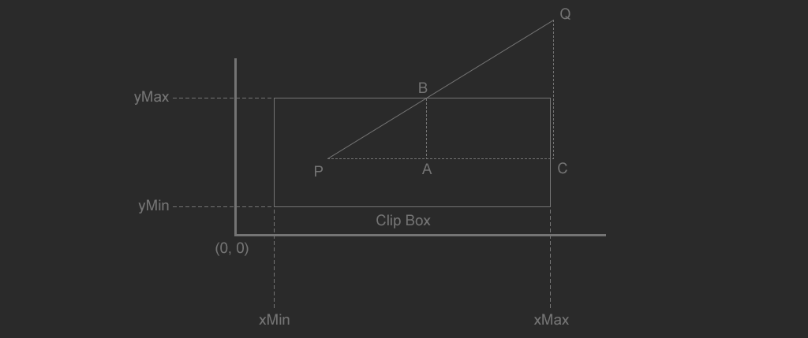
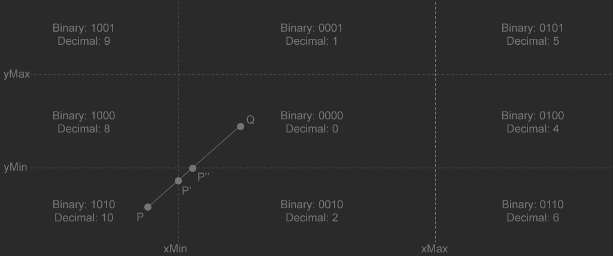

Clipping
The image above shows a rectangle defined by four points: \(x_{Min}\), \(y_{Min}\), \(x_{Max}\), and \(y_{Max}\). There is a line (\(PQ\)) that crosses the top (and right) of the rectangle defined by the points \(P\) and \(Q\). The intersection of the line segment and the top of the clip rectangle is \(B\). The clipped line segment is the line \(PB\).
Because line PQ intersects the top of the rectangle, we know that \(y_{B}\) should have the same y coordinate as the top of the rectangle.
$$ y_{B} = y_{Max} $$
The triangles formed by \(PAB\) and \(PCQ\) are similar:
$$ \frac{x_{B} - x_{P}}{y_{B} - y_{P}} = \frac{x_{Q} - x_{P}}{y_{Q} - y_{P}} $$
Replace \(y_{B}\) with \(y_{Max}\) and multiply both sides of the equation by \(y_{Max} - y_{P}\) to obtain \(x_{B}\).
$$ x_{B} = x_{P} + \frac{ (y_{Max} - y_{P})(x_{Q} - x_{P}) }{ (y_{Q} - y_{P}) } $$
The above formula is only valid for one case: where the line ends above the clip region, intersecting the top edge of the clip rectangle. The formula is slightly different for the bottom and side edges. We also have to test the line from the other direction. That makes for a total of 8 possible clip formulas, each of them just slightly different. Deriving them all is the same process as above.
Cohen-Southerland Line Clipping
The cohen-southerland line clipping algorithm is an iterative algorithm that can clip a line to a rectangle. It classifies the end points of the line into one of 9 spaces (above, below, etc..). Then in a loop, each space is clipped. For example if a line starts outside the lower left of the clipping region, on the first iteration it will be clipped against the left edge, then on the next iteration against the bottom edge. The iterations stop when there are no points outside the clipping rectangle. The image below shows this, with \(P'\) being the first iteration and \(P''\) being the second.
The four lines formed by the clipping rectangle divide the \(xy\) plane into \(9\) regions. Each of the \(9\) regions is given a pre-defined unique bitcode. For any point using the bitcodes shown in the above image, the following are true:
- bit 3 is set only if \(x < x_{Min}\)
- bit 2 is set only if \(x > x_{Max}\)
- bit 1 is set only if \(y < y_{Min}\)
- bit 0 is set only if \(y > y_{Max}\)
- No bits are set if the point is inside the clipping rectangle.
In the above image, the point \(P\) (code: 1010) is first clipped against the left side of the clipping rectangle, resulting in line \(P'Q\). The new point, \(P'\) has a new code as well, it's 0010, this new point only needs to be clipped to the bottom edge of the clipping rectangle.
struct Point {
float x;
float y;
inline Point() : x(0.0f), y(0.0f) { }
inline Point(float _x, float _y) : x(_x), y(_y) { }
inline Point(int _x, int _y) : x(_x), y(_y) { }
};
uchar GetClipCode(const Point& p, const Point& min, const Point& max) {
return (
(p.x < min.x? 8 : 0) | (p.x > max.x? 4 : 0) |
(p.y < min.y? 2 : 0) | (p.y > max.y? 1 : 0)
);
}
// Returns true if the line is visible, false if it's outside of clip rect.
bool Clip_Line(Point& a, Point& b, const Point& min, const Point& max) {
unsigned char clipA = GetClipCode(a, min, max);
unsigned char clipB = GetClipCode(b, min, max);
float deltaX, deltaY;
while ((clipA | clipB) != 0) { // Loop until clipped
// Trivial reject case if both points are on
// the same side of a clip plane, we can reject them
if ((clipA & clipB) != 0) {
return false;
}
deltaX = b.x - a.x;
deltaY = b.y - a.y;
if (clipA != 0) {
if ((clipA & 8) == 8) {
a.y += (min.x - a.x) * deltaY / deltaX;
a.x = min.x;
}
else if ((clipA & 4) == 4) {
a.y += (max.x - a.x) * deltaY / deltaX;
a.x = max.x;
}
else if ((clipA & 2) == 2) {
a.x += (min.y - a.y) * deltaX / deltaY;
a.y = min.y;
}
else if ((clipA & 1) == 1) {
a.x += (max.y - a.y) * deltaX / deltaY;
a.y = max.y;
}
clipA = GetClipCode(a, min, max);
}
else if (clipB != 0) {
if ((clipB & 8) == 8) {
b.y += (min.x - b.x) * deltaY / deltaX;
b.x = min.x;
}
else if ((clipB & 4) == 4) {
b.y += (max.x - b.x) * deltaY / deltaX;
b.x = max.x;
}
else if ((clipB & 2) == 2) {
b.x += (min.y - b.y) * deltaX / deltaY;
b.y = min.y;
}
else if ((clipB & 1) == 1) {
b.x += (max.y - b.y) * deltaX / deltaY;
b.y = max.y;
}
clipB = GetClipCode(b, min, max);
}
}
return true;
}